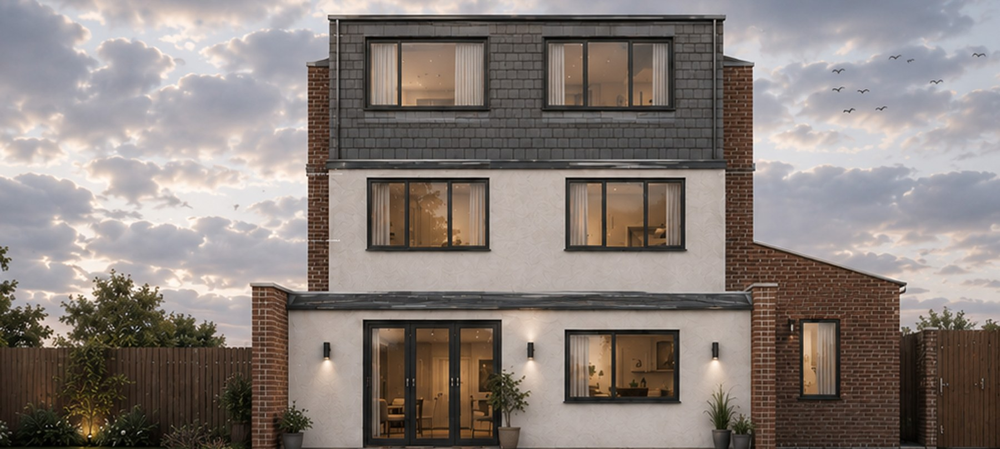

Dormer, hip-to-gable and mansard conversions, from head-height checks to building regulations sign-off.

A loft conversion turns the unused roof space of your house into a habitable room — usually a bedroom with an en-suite, a home office, or a children's playroom. On a typical London two-storey terrace, it adds an entire floor: 20–35 square metres of new space without touching the garden, without moving, and usually without needing planning permission.
Rear dormer. The most common in London. A box-shaped extension built from the rear roof slope, creating full headroom across most of the new floor. Usually falls within permitted development — no planning application needed.
Mansard. The rear roof slope is replaced with a near-vertical wall and a shallow flat top. Creates the maximum volume. Almost always requires planning permission. Popular on Victorian and Edwardian terraces where neighbouring properties have already set the precedent.
Hip-to-gable. The sloping side of a hipped roof is extended to a vertical gable wall, creating a larger floor plate. Common on semi-detached and end-of-terrace. Usually combined with a rear dormer. Often requires planning depending on the borough.
L-shaped dormer. A rear dormer that wraps around the side above the outrigger. Creates the largest possible loft space on a typical London terrace. Most expensive but most spacious.
A simple rear dormer usually falls within permitted development — provided it doesn't exceed the ridge height, doesn't extend forward of the principal elevation, and uses matching materials. In conservation areas, a dormer almost always needs planning permission.
Mansard conversions, hip-to-gable conversions, and anything that raises the ridge height will need a householder planning application. Some London boroughs have specific loft conversion design guidance. We check your property's position — planning history, conservation status, street precedent — as part of the feasibility study.
Every loft conversion involves structural engineering. The existing ceiling joists were designed to carry a ceiling, not a floor — they need strengthening or replacing. A steel beam typically runs across the property at ceiling level to carry the new loads. We coordinate all structural design with a partner engineer as part of the service.
Adding a third storey triggers specific fire safety requirements: a protected escape route from the loft to the front door, fire doors on every habitable room along the route, fire-rated plasterboard to the stairwell, and linked smoke detectors on every level. In some cases, sprinklers. These requirements affect the design of the whole house, not just the loft — we build them in from the start.
Send us the address. A director will reply within one working day with an honest answer — no obligation.